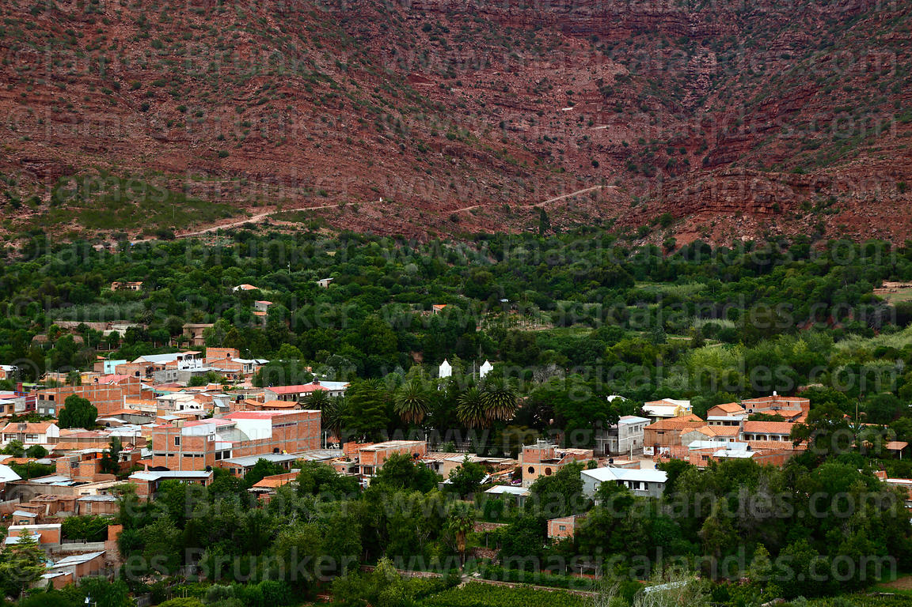
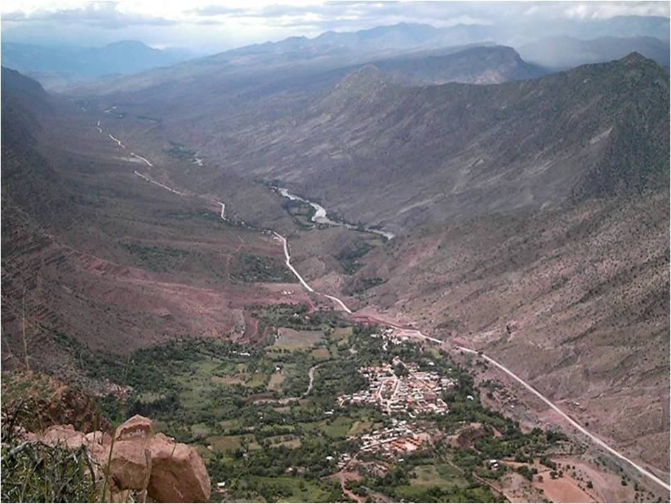
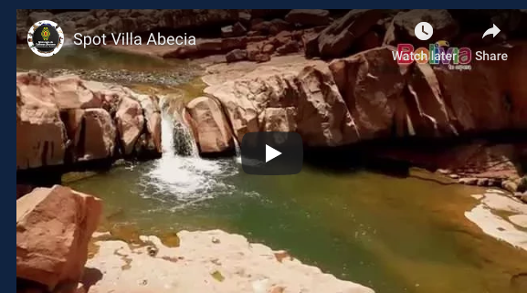

Mi ciudad Villa Abecia- SudCinti - Chuquisaca - Bolivia


Mi municipio de Villa Abecia es una de los mas listos de Chuquisaca,
Descripcion de mi pais
Conocida como el "Edén de los Cintos", Villa Abecia es la capital de la Provincia Sud Cinti en el departamento de Chuquisaca. Se encuentra en un valle estrecho rodeado de formaciones rocosas rojizas que contrastan con el verde
intenso de sus viñedos. Es famosa por su microclima templado, lo que la convierte en el refugio perfecto para quienes buscan escapar del frío o del ajetreo de las ciudades. Su arquitectura mantiene un aire colonial y tranquilo, donde la
vida gira en torno a la plaza principal y la producción de vinos y singanis artesanales de alta calidad.
Zonas turisticas

Este es, sin duda, el lugar más icónico de Villa Abecia. Se trata de una serie de piscinas naturales esculpidas por la erosión del agua sobre la roca sólida a lo largo de milenios. El atractivo: El agua es cristalina y
fresca, ideal para los días calurosos del valle. Las formaciones rocosas que las rodean crean un paisaje casi surrealista, como si fueran jacuzzis naturales de diferentes profundidades. Experiencia: Es el lugar favorito para el
"chapuzón" de fin de semana. Además, el entorno es perfecto para hacer fotografías por el contraste de las rocas rojas y el agua.
Festividades culturales

- Fiesta de la Virgen del Rosario
- Es la festividad patronal más importante y se celebra con fervor cada primer domingo de octubre. La Celebración: El pueblo se llena de visitantes de toda la región. La fiesta comienza con actos religiosos y procesiones donde la imagen de la Virgen recorre las calles decoradas. Cultura y Danza: Lo más llamativo es la "entrada" folclórica, donde diferentes fraternidades bailan ritmos típicos de la región de los Cinti y del país. La Gastronomía: No puede faltar el asado de chancho al horno, que es el plato estrella de la festividad, siempre acompañado de un buen vaso de vino patero o singani de la zona. Es una fiesta donde la hospitalidad de la gente de Villa Abecia realmente brilla.
Volver al menu